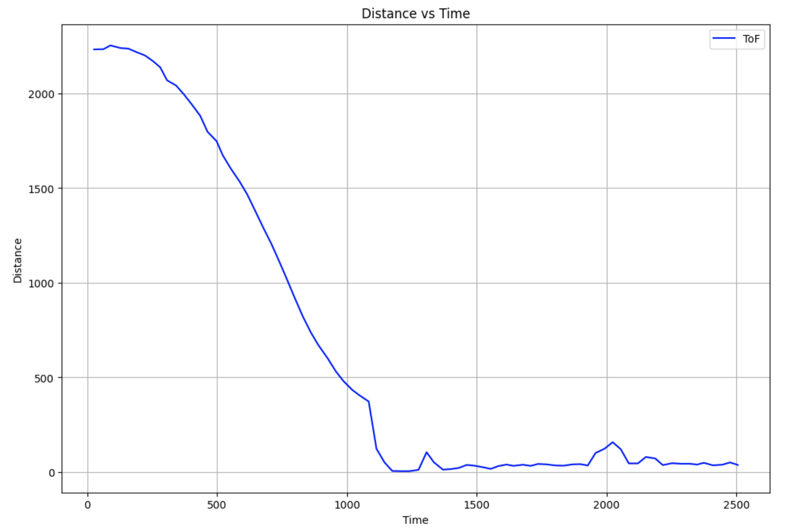
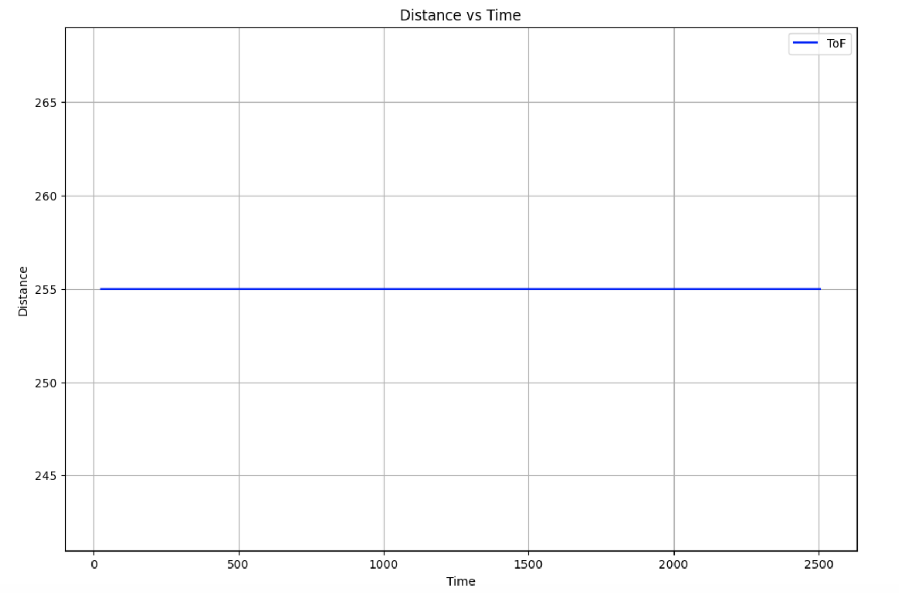
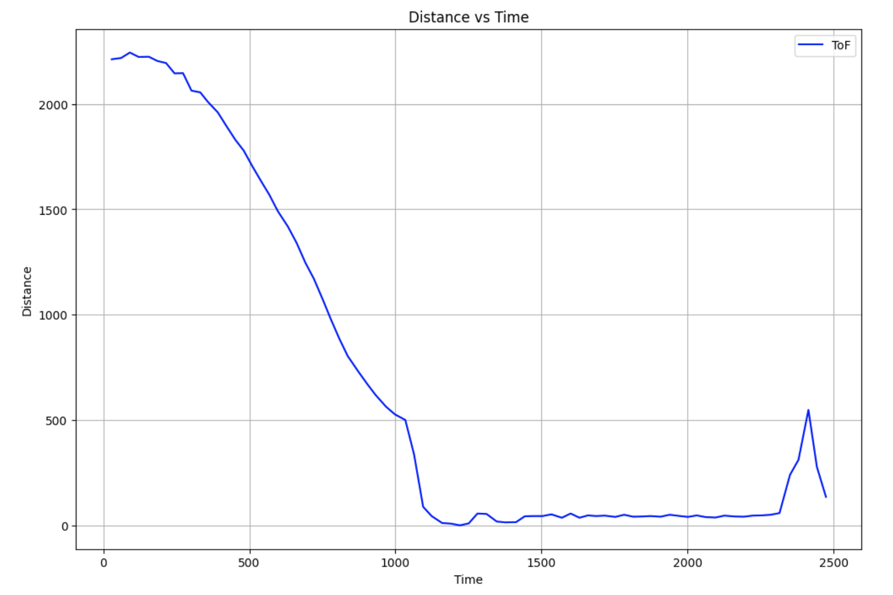
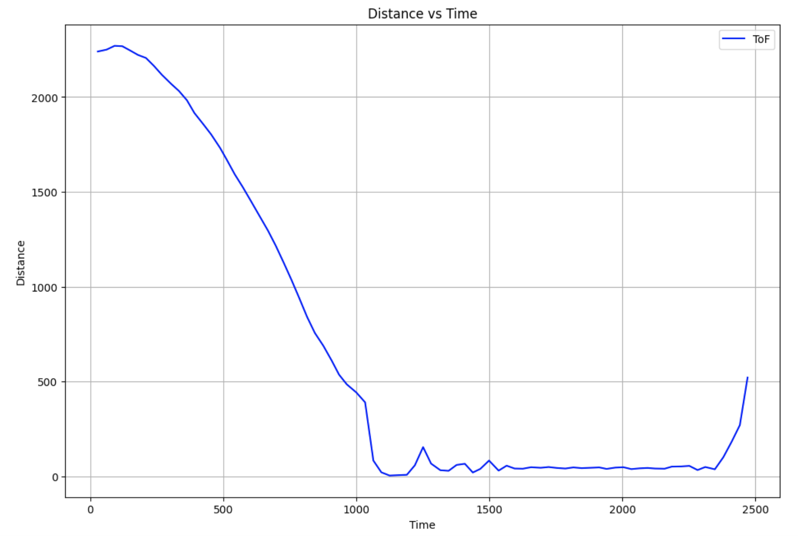

Lab 8: Stunts!
03.25.2025 - 04.08.2025
In this lab, we combined all our previous work to perform high-speed, sensor-driven stunts. I chose to implement the flip maneuver, where the robot drives quickly toward a wall, performs a flip on a sticky mat, and then returns to its starting position.
Implementation
In order to implement the flip, I created a new case called flip.
case FLIP:
{
set_up_tof();
data_i = 0;
start_time = (float)millis();
current_time = (float)millis();
float elapsed = current_time - start_time;
distanceSensor1.startRanging();
while (elapsed < 3500)
{
if (distanceSensor1.checkForDataReady() && data_i < num_data_msgs)
{
distanceSensor1.startRanging();
distance1_data[data_i] = distanceSensor1.getDistance();
distanceSensor1.clearInterrupt();
distanceSensor1.stopRanging();
if (elapsed < 750)
{
drive(1, 255);
}
else
{
drive(-1, 255);
}
times[data_i] = elapsed;
data_i++;
}
current_time = (float)millis();
elapsed = current_time - start_time;
}
drive(0, 0);
for (int i = 0; i < data_i; i++)
{
tx_estring_value.clear();
tx_estring_value.append(times[i]);
tx_estring_value.append(",");
tx_estring_value.append(distance1_data[i]);
tx_characteristic_string.writeValue(tx_estring_value.c_str());
}
break;
}
First, the code initializes the Time-of-Flight (TOF) sensors and sets up variables to track time and store distance data. It then enters a timed sequence lasting 3.5 seconds that controls the robot's movements.
During the first 750 milliseconds, the robot drives forward at maximum speed (PWM value of 255) to build up enough momentum to perform the flip. After this initial period, the robot immediately reverses direction at the same speed, which causes the robot to flip due to the sudden change in momentum while the front wheels encounter the sticky mat. Throughout this process, the TOF sensor continuously measures the distance to objects in front of the robot, storing this data along with timestamps for later analysis.
Because I did the flip in my room without a measuring tape, I just put tape down, and later measured the distance from the door to be roughyl 2.25 meters.
Flip 1
This flip took 2.56 seconds to travel to the door and back. Below, you can see the distance and pwm graphs.
 Flip 2
This flip took 2.47 seconds to travel to the door and back.
Flip 3
This flip took 2.27 seconds to travel to the door and back.
Bloopers
Enjoy, and subcribe and like.
Conclusion
I had a lot of fun flipping the car for this lab. At first, I tried to do a drift, but decided not to because of time constraints. I thought I would have to weigh the car down on one end with rocks, but because I ran it on carpet which has more friction, I didn't need to.